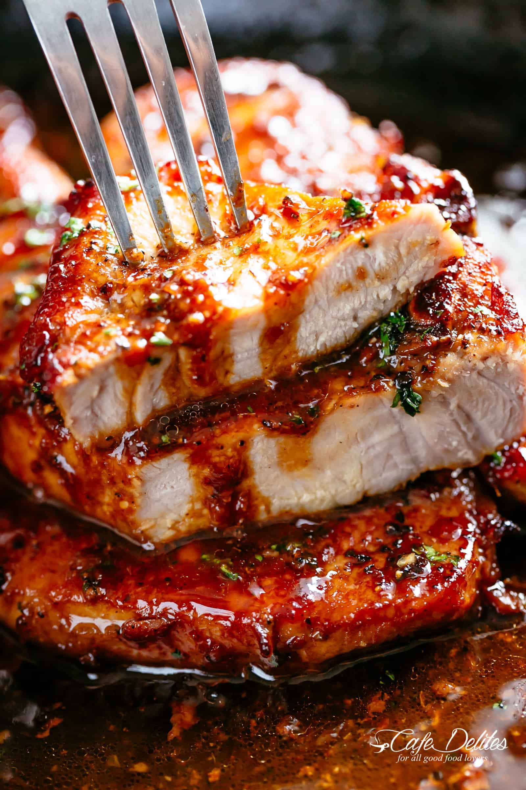

Home
Honey Garlic Pork Chops

When you're in need of a quick and easy dinner that the whole family will love, look no further than pork chops. This 5-star grilled pork chop recipe has reviewers' mouths watering thanks to the spectacular honey-garlic glaze
- 1/2 cup ketchup
- 2 2/3 tablespoons honey
- 2 tablespoons low-sodium soy sauce
- 2 cloves garlic, crushed
- 6 (4 ounce) (1-inch thick) pork chops
- Preheat grill for medium heat and lightly oil the grate.
- Whisk ketchup, honey, soy sauce, and garlic together in a bowl to make a glaze.
- Sear the pork chops on both sides on the preheated grill. Lightly brush glaze onto each side of the chops as they cook; grill until no longer pink in the center, about 7 to 9 minutes per side. An instant-read thermometer inserted into the center should read 145 degrees F (63 degrees C).